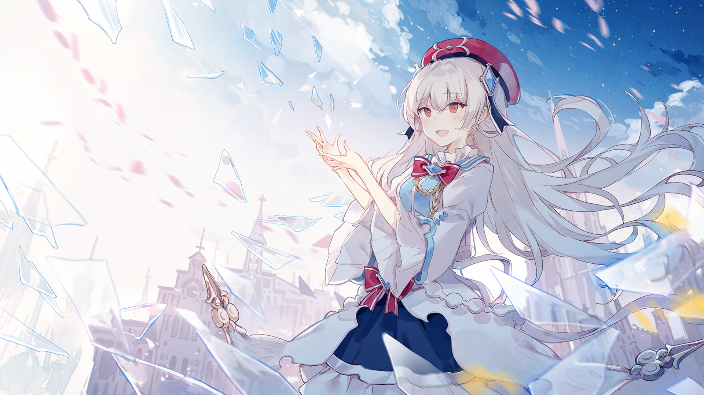

Selected work
Composed like stills from a longer film.
My work lives between environment design, visual storytelling, poster composition, and emotional atmosphere.

Personal art portfolio
I create cinematic digital art focused on mood, architecture, transit, and the emotional tone of urban space.

A quieter, more editorial presentation of my archive. Built to let the work lead, with structure that feels deliberate, minimal, and clear.
Selected work
My work lives between environment design, visual storytelling, poster composition, and emotional atmosphere.

Current focus
Architecture, movement, reflected light, and compressed spatial rhythm.
Medium
2D painting, 3D blockouts, compositing, color grading, and finish work.
Available for
Key art, album covers, posters, editorial images, and concept pieces.
Gallery
Tap or click any image to view it in full detail.
Artist statement
My images often begin with architecture, public transit, weather, and the way light settles into a city after dark. I am drawn to moments that feel emotionally precise even when they remain quiet.
Rather than building spectacle for its own sake, I try to make images that hold tension and softness at the same time. The result is usually cinematic, restrained, and focused on atmosphere.
Process
I gather architecture, transit, signage, weather, and film stills to establish tone.
Each image begins with composition, perspective, and a simple lighting plan.
Color is introduced carefully so the image feels cohesive rather than decorative.
Texture, edge control, softness, and contrast shape the final emotional weight.
Soundtrack
Play it while browsing if you want the site to feel more like a continuous scene.
Contact
If you have a project in mind, I'd be glad to hear about it.
For project inquiries, timelines, and rates.
Platforms
Instagram: @yourhandle
ArtStation: your-portfolio-link
Behance: your-profile-link